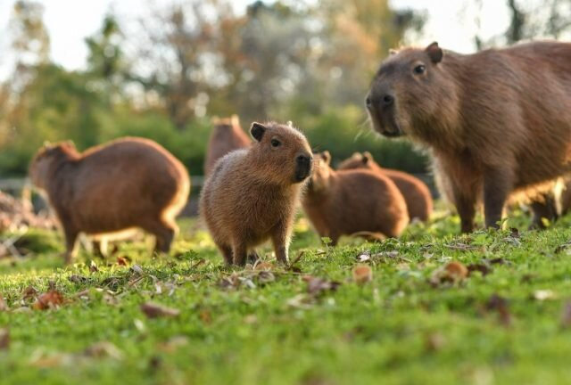

Капибара, или водосвинка (Hydrochoerus hydrochoeris) является родственницей
всем известной морской свинки и напоминает ее увеличенную в десятки раз копию.
Это самый крупный представитель отряда грызунов на планете.
Длина ее тела более 1 метра, высота в холке — выше полуметра,
а живая масса тела от 50 до 75 килограммов (рекордная живая масса — 91 килограмм).
Самки крупнее и тяжелее самцов. Своими размерами капибара напоминает молодую домашнюю свинью.
Голова крупная, морда почти квадратная, ноздри широко расставлены, глаза и уши небольшие.
В ротовой полости находится 20 зубов, резцы оранжевого цвета и растут всю жизнь.
Тело бочкообразной формы, хвост рудиментарный. На передних конечностях по 4 пальца, на задних по 3 пальца.
Между пальцами лап расположены плавательные перепонки. Задние конечности длиннее передних.
Тело капибары покрыто редковатой грубой щетинистой шерстью, которая обладает водоотталкивающими свойствами.
Длина шерсти от 3 до 12 сантиметров. Подшерсток отсутствует, а окраска шерсти буровато-рыжая.
На животе шерсть более светлого оттенка. Молодняк окрашен светлее взрослых особей.
Картинка с относительной ссылкой
Распространены капибары в Южной и Центральной Америке от Ориноко до Ла-Платы
и от Атлантического океана до предгорий Анд. Встретить капибару можно на
территории Венесуэлы, Парагвая, Боливии, Эквадора, Перу, на востоке Колумбии
и северо-востоке Аргентины. Не водятся водосвинки в Чили.
В Аргентине, Уругвае и Парагвае водосвинок называют карпинчо,
в Бразилии — капивара, в Гайане — ватрас, в Перу — ронсого,
в Боливии — капигуара или чигуире, в Перу — рококо, В Колумбии и
Венесуэле — ферчо. На языке племени бразильских индейцев тупи
капибара означает «поедатель травы».
В Северной Америке капибар можно встретить во Флориде и Калифорнии.
Там могут выжить убежавшие из зоопарков или выброшенные частными
владельцами звери. Небольшая популяция появилась в Тринидаде.
Кстати, в некоторых штатах США содержать капибару в неволе запрещено законодательно.
Картинка с абсолютной ссылкой
 Видео с капибарами
Видео с капибарами
Проверка HTML на сайте https://validator.w3.org/